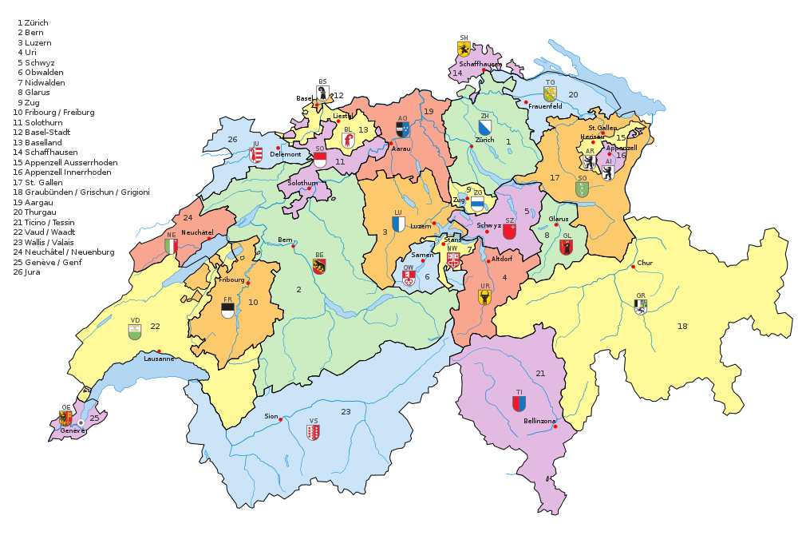

Switzerland, officially the Swiss Confederation, is a landlocked country located at the confluence of Western, Central and Southern Europe.The country is a federal republic composed of 26 cantons, with federal authorities based in Bern. Switzerland is bordered by Italy to the south, France to the west, Germany to the north and Austria and Liechtenstein to the east. It is geographically divided among the Swiss Plateau, the Alps and the Jura, spanning a total area of 41,285 km2 area of 39,997 km2.
Switzerland, officially the Swiss Confederation, is a landlocked country located at the confluence of Western, Central and Southern Europe.[e][15] The country is a federal republic composed of 26 cantons, with federal authorities based in Bern. 